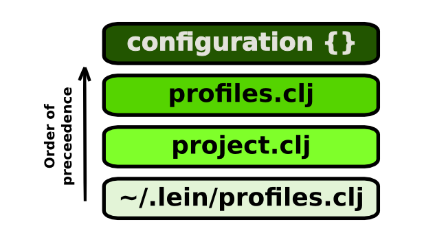

Profiles
You can run your Clojure project with different profiles, establishing a different set of configuration options when run with Leiningen.
Profiles can be created in one of the following places:
| Profile name | Filename | Description |
|---|---|---|
| Project | project.clj |
project specific profiles used by all developers on the project. |
| User | profiles.clj |
add or override individual configuration for the project, not typically shared as part of the project. |
| User-wide | ~/.lein/profiles.clj |
common configuration a developer uses across all their Clojure projects. |
Profiles defined with the same name in any of the above files are either merged or over-written in the following order of precedence to form a single configuration map:

refactor the rest of the text on profiles to just cover the essentials and link to the official documentation for further details.
probably just need a few examples typically added to the different profile files
Project profiles
Define one or more profiles specific to the project. Typically done to seperate configuration for different parts of the development lifecycle, eg. dev, test, production
The example below adds a "dummy-data" resources directory during development and a dependency upon "expectations" that's only used for tests/development.
(defproject myproject "0.5.0-SNAPSHOT"
:description "A project for doing things."
:dependencies [[org.clojure/clojure "1.4.0"]]
:profiles {:dev {:resource-paths ["dummy-data"]
:dependencies [[expectations "1.4.41"]]}})
Use the lein show-profiles task to list the project's profiles.
User profiles
User specific configuration
Create / edit the file profiles.clj in the root of the specific Clojure project (the same directory as project.clj)
Use the lein show-profiles task to list the project's profiles.
User-wide profiles
Add have common configuration you want in all your Clojure projects without having to modify the project.clj file each time.
Create / edit the file ~/.lein/profiles.clj
Typical things are added to your profile include
- common development tools (lein-ancient, slamhound, etc)
- additional directories on the classpath (ie. classes used during testing that are not in any jar file yet)
Declaring Profiles
Profiles specified in ~/.lein/profiles.clj override profiles in a specific project configuration file, project.clj.
Override project configuration without having to change the project.clj file or adding those changes to version control.
User-wide profiles can also be specified in ~/.lein/profiles.clj. These will be available in all projects managed by Leiningen, though those profiles will be overridden by profiles of the same name specified in the project. System-wide profiles can be placed in /etc/leiningen/profiles.clj. They are treated the same as user profiles, but with lower precedence.
You can also define user-wide profiles within clj-files inside ~/.lein/profiles.d. The semantics within such files differ slightly from other profile files: rather than a map of maps, the profile map is the top-level within the file, and the name of the profile comes from the file itself (without the .clj part). Defining the same user-wide profile in both ~/.lein/profiles.clj and in ~/.lein/profiles.d is considered an error.
Default Profiles
Certain profiles are active by default unless you specify another set of profiles using the with-profiles task. Each of the default profiles have different semantics:
If you want to access dependencies or plugins during development time for any project place them in your :user profile. Your ~/.lein/profiles.clj file could look something like this:
{:user {:plugins [[lein-pprint "1.1.1"]]
:dependencies [[slamhound "1.3.1"]]}}
The :dev profile is used to specify project specific development tooling. Put things here if they are required for builds or tests, rather than just convenience tooling.
The :user profile is separate from :dev; the latter is intended to be specified in the project itself. In order to avoid collisions, the project should never define a :user profile, nor should a user-wide :dev profile be defined. Likewise, system profiles should use the :system profile, and define neither :user nor :dev profiles.
The :system profile is similar to :user, except it applies system-wide instead of merely to a single user.
The :base profile provides dependencies necessary for basic repl functionality, adds dev-resources to the :resources-path, and sets defaults for :jvm-opts, :checkout-deps-share and :test-selectors. It is part of Leiningen itself; you shouldn't need to change it.
The profiles listed above are active during development, but they are unmerged before the jar and pom files are created, making them invisible to code that depends upon your project.
The :provided profile is used to specify dependencies that should be available during jar creation, but not propagated to other code that depends on your project. These are dependencies that the project assumes will be provided by whatever environment the jar is used in, but are needed during the development of the project. This is often used for frameworks like Hadoop that provide their own copies of certain libraries.
The :default profile specifies the profiles that are active by default when running lein tasks. If not overridden, this is set to :leiningen/default, which is a composite profile with [:base :system :user :provided :dev].
Task Specific Profiles
Some tasks automatically merge a profile if specified. Examples of these are the :test profile, when running the test task, and the :repl profile, when running the repl task.
Profile Metadata
If you mark your profile with ^:leaky metadata, then the profile will not be stripped out when the pom and jar files are created.
If you mark a profile with ^{:pom-scope :test} metadata, then the profile's :dependencies will be added with a test scope in the generated pom and jar when active. The :dev, :test, and :base profiles have this set automatically.
If you mark a profile with ^{:pom-scope :provided} metadata, then the profile's :dependencies will be added with a provided scope in the generated pom and jar when active. The :provided profile has this set automatically.
Merging
Profiles are merged by taking each key in the project map or profile map, combining the value if it's a collection and replacing it if it's not. Profiles specified later take precedence when replacing, just like the clojure.core/merge function. The dev profile takes precedence over user by default. Maps are merged recursively, sets are combined with clojure.set/union, and lists/vectors are concatenated. You can add hints via metadata that a given value should take precedence (:replace) or defer to values from a different profile (:displace) if you want to override this logic:
{:profiles {:dev {:prep-tasks ^:replace ["clean" "compile"]
:aliases ^:displace {"launch" "run"}}}}
The exception to this merge logic is that :plugins and :dependencies have custom de-duplication logic since they must be specified as vectors even though they behave like maps (because it only makes sense to have a single version of a given dependency present at once). The replace/displace metadata hints still apply though.
Remember that if a profile with the same name is specified in multiple locations, only the profile with the highest "priority" is picked – no merging is done. The "priority" is – from highest to lowest – project.clj, profiles.clj, user-wide profiles, and finally system-wide profiles.
If you need to enable personal overrides of parts of a profile, you can use a composite profile with common and personal parts - something like :dev [:dev-common :dev-overrides]; you would then have just :dev-overrides {} in project.clj and override it in profiles.clj.
Another use of profiles is to test against various sets of dependencies:
(defproject swank-clojure "1.5.0-SNAPSHOT"
:description "Swank server connecting Clojure to Emacs SLIME"
:dependencies [[org.clojure/clojure "1.2.1"]
[clj-stacktrace "0.2.4"]
[cdt "1.2.6.2"]]
:profiles {:1.3 {:dependencies [[org.clojure/clojure "1.3.0"]]}
:1.4 {:dependencies [[org.clojure/clojure "1.4.0-beta1"]]}})
Activating Profiles
To activate a different set of profiles for a given task, use the with-profile higher-order task:
$ lein with-profile 1.3 test :database
Multiple profiles may be combined with commas:
$ lein with-profile qa,user test :database
Multiple profiles may be executed in series with colons:
$ lein with-profile 1.3:1.4 test :database
The above invocations activate the given profiles in place of the defaults. To activate a profile in addition to the defaults, prepend it with a +:
$ lein with-profile +server run
You can also use - to deactivate a profile.
By default all profiles will share the same :target-path, which can cause problems if settings from one profile leak over into another. It's recommended to set :target-path to "target/%s", which will isolate each profile set and prevent anything from bleeding over.
Composite Profiles
Sometimes it is useful to define a profile as a combination of other profiles. To do this, just use a vector instead of a map as the profile value. This can be used to avoid duplication:
{:shared {:port 9229, :protocol "https"}
:qa [:shared {:servers ["qa.mycorp.com"]}]
:stage [:shared {:servers ["stage.mycorp.com"]}]
:production [:shared {:servers ["prod1.mycorp.com", "prod1.mycorp.com"]}]}
Dynamic Eval
Often you want to read an environment variable or execute a function to capture a value to use in your profiles. In order to do such a thing with the profiles.clj you'll need to use the read-eval syntax.
Here is an example of such a case:
{:user {:compile-path #=(eval (System/getenv "ci.compile-path")),
:target-path #=(eval (System/getenv "ci.target-path"))}}
Debugging
To see how a given profile affects your project map, use the lein-pprint plugin:
$ lein with-profile 1.4 pprint
{:compile-path "/home/phil/src/leiningen/lein-pprint/classes",
:group "lein-pprint",
:source-path ("/home/phil/src/leiningen/lein-pprint/src"),
:dependencies
([org.clojure/tools.nrepl "0.0.5" :exclusions [org.clojure/clojure]]
[clojure-complete "0.1.4" :exclusions [org.clojure/clojure]]
[org.thnetos/cd-client "0.3.3" :exclusions [org.clojure/clojure]]),
:target-path "/home/phil/src/leiningen/lein-pprint/target",
:name "lein-pprint",
[...]
:description "Pretty-print a representation of the project map."}
In order to prevent profile settings from being propagated to other projects that depend upon yours, the :default profiles are removed from your project when generating the pom, jar, and uberjar, and an :uberjar profile, if present, is included when creating uberjars. (This can be useful if you want to specify a :main namespace for uberjar use without triggering AOT during regular development.) Profiles activated through an explicit with-profile invocation will be preserved.
Production
Leiningen 2.1.0 onward get a speed boost by disabling optimized compilation (which only benefits long-running processes). This can negatively affect performance in the long run, or lead to inaccurate benchmarking results. If want the JVM to fully optimize, you can you can switch profiles with lein with-profiles production run